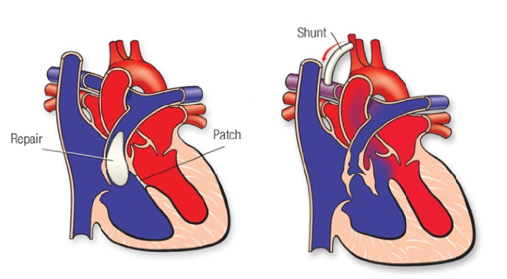
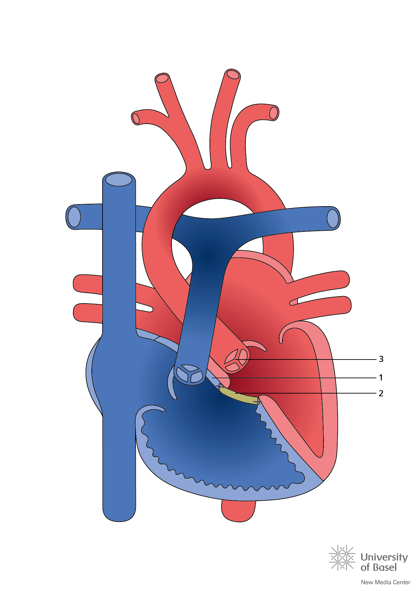
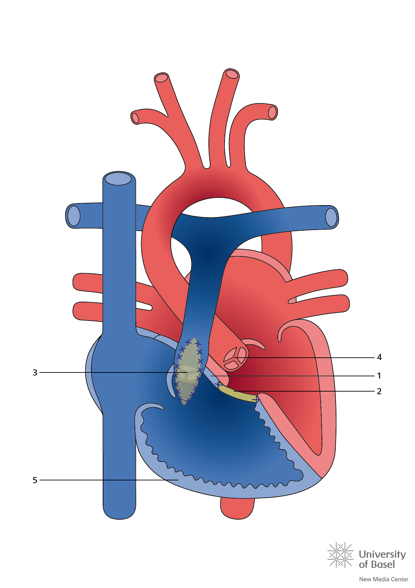
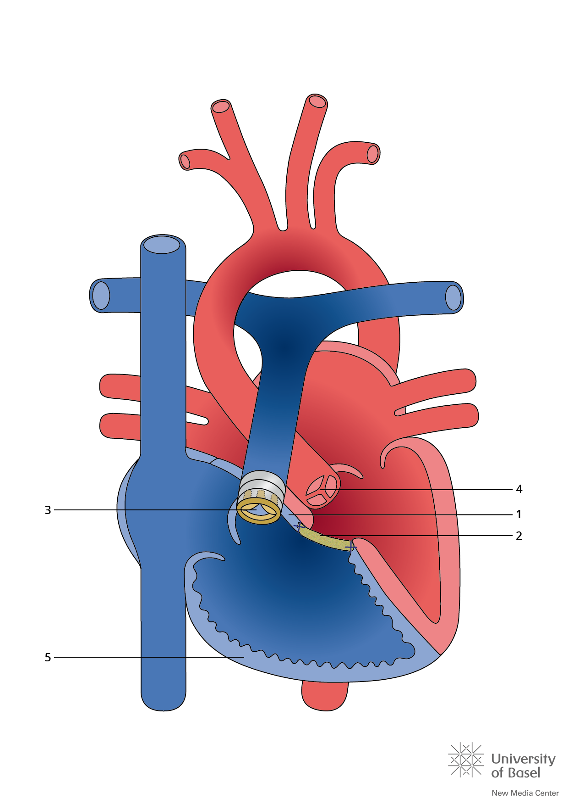

本篇以 TOF with pulmonary stenosis 為主。Pulmonary atresia／major aortopulmonary collateral arteries（MAPCAs）等複雜型需另外評估，見 Pulmonary atresia intervention，不能直接套用下列標準路徑。RV／LV＝right／left ventricle；PA＝pulmonary artery。
適應症與手術時機
flowchart TD
A["TOF：看血氧與灌流"] --> B{"肺血流與症狀"}
B -->|"穩定、無症狀"| C["追蹤生長與血氧"]
C --> D["通常 3–6 月矯正"]
B -->|"不足／缺氧發作"| E["先穩定 ABC<br/>依賴導管者給 PGE1"]
E --> F{"解剖與整體風險"}
F -->|"適合早期修補"| G["早期 complete repair"]
F -->|"需先橋接"| H["Shunt／PDA 或 RVOT stent"]
H --> J["稍後完整矯正<br/>重新評估時點"]
B -->|"肺血流過多"| I["治療心衰竭<br/>另規劃修補時機"]
圖 3｜先判斷生理狀態，再決定一期矯正或分期。疑似 tet spell 即需立即住院評估；不是等下一次發作。[1:1][2]
有症狀的新生兒可選 primary repair 或 palliation。 早產、低出生體重、小／不連續肺動脈、重大遺傳／其他器官異常或敗血症等，會影響是否先橋接；不能只憑年齡或單一血氧數字決定。[1:2]
矯正前的穩定與支持
| 情境 | 處置重點 | 為什麼／監測 |
|---|---|---|
| 肺血流足夠、病況穩定 | 追蹤血氧趨勢、餵食與體重；維持適當水分，處理發燒／疼痛 | 避免脫水與哭鬧誘發動態阻塞；不必每人常規氧療或住院 |
| Duct-dependent pulmonary flow | Alprostadil＝prostaglandin E₁（PGE₁）持續靜脈輸注，銜接介入 | 維持 patent ductus arteriosus（PDA）供應肺血流；監測呼吸暫停、低血壓與體溫 |
| 缺氧／急性惡化 | 氧氣與 ABC 評估，同時找肺血流受阻原因 | 心內右向左分流時，給氧反應可能有限；不能只追求血氧數字正常 |
| 動態阻塞／反覆 spells | 心臟團隊可選擇 propranolol 作暫時控制，並重新評估手術時機 | 非所有 TOF 的常規預防藥；預防效益證據有限，不可用來延後必要介入 |
| 肺血流過多的 pink TOF | 依心衰竭與容量狀態處理 | 與肺血流不足不同，不能一律補液或增加肺血流 |
藥物選擇需對應當下生理；長期 beta-blocker 預防與急性 tet spell 救治是不同問題。[3][4]
缺氧發作 Tet spell 的急救
發作線索： 突然比平常更發紺、呼吸急促／激動，RVOT 雜音變小或消失；出現嗜睡、意識下降或昏厥代表嚴重惡化。不要誤認成「哭累睡著」。[4:1]
flowchart TD A["哭鬧／脫水<br/>交感刺激增加"] --> B["動態 RVOT 阻塞加重"] B --> C["肺血流下降<br/>右向左分流增加"] S["SVR 下降"] --> C C --> D["缺氧 → 激動與酸中毒"] D --> B E["安撫＋鎮痛<br/>減少交感刺激"] -.-> A F["抱膝／升壓策略<br/>提高 SVR"] -.-> S G["評估低血容量<br/>適量補液"] -.-> B H["氧氣與呼吸支持<br/>處理缺氧"] -.-> D
圖 4｜實線是惡性循環；虛線指向要介入的環節。SVR＝systemic vascular resistance；SVR 下降可直接增加右向左分流，不必先引起 RVOT 收縮。 藥物與呼吸道處置由監測下的醫療團隊執行。[6]
| 順序／情境 | 行動 | 要注意 |
|---|---|---|
| 立即並行 | 呼救、ABCDE、安撫與減少刺激；knee–chest position；給氧、監測 SpO₂／ECG／血壓 | 抱膝可提高 SVR；急性發作可給高濃度氧氣，但不能等待氧氣單獨奏效 |
| 建立血管通路 | 評估灌流、血糖與 blood gas；若有低血容量／preload 不足，等張液體 10 mL/kg 分次給並重評 | 不因發紺就盲目大量補液；合併心衰竭時尤其需謹慎 |
| 發作持續 | 監測下鎮痛／鎮靜，例如 morphine；必要時由心臟／加護團隊使用 beta-blocker 或 phenylephrine | 前者減輕動態阻塞、後者提高 SVR；監測呼吸、心搏與血壓，依院內體重劑量流程 |
| 持續惡化／對治療無反應 | 專家呼吸道處置、插管與通氣，緊急心臟介入／手術評估 | 誘導時避免 SVR／preload 驟降；必要時以機械循環支持救援 |
| 發作解除後 | 即使初次、已緩解，疑似 tet spell 仍需立即住院評估可能介入 | 找誘因並檢討修補／橋接時機；恢復原本血氧不代表後續風險消失 |
急救策略依 PIER 2025，住院評估原則依 ACC 2026 流程；嚴重病例不需逐格等待才啟動兒童加護與心臟團隊。[4:2][2:1]
暫時性 Palliation：如何撐到完整矯正
此處 palliation 是增加肺血流的橋接處置，不是末期安寧照護；VSD 與主要心內解剖仍未完整修補。
flowchart TD A["增加通往肺的血流"] --> B["mBTT shunt"] A --> C["PDA stent"] A --> D["RVOT stent"] B --> E["體循環動脈<br/>經新建管道 → 肺動脈"] C --> F["主動脈<br/>經原有 PDA → 肺動脈"] D --> G["右心室<br/>經原本 RVOT → 肺動脈"] E --> H["改善肺血流<br/>再規劃 complete repair"] F --> H G --> H
圖 5｜三種橋接的差異是「血從哪裡來、走哪條路」。沒有可用導管時不能直接套用 PDA stent；RVOT stent 也需要可跨越的合適解剖。
| 方式 | 適合的情境／路徑 | 主要取捨 |
|---|---|---|
| Modified Blalock–Thomas–Taussig（mBTT）shunt，亦稱 mBT shunt | 以人工血管連接 subclavian／innominate artery 與 pulmonary artery，建立體循環至肺的血流 | 可橋接不適合立即修補者；留意分流血栓／狹窄、肺血流過多與肺動脈變形 |
| PDA stent | 以支架維持既有導管通路；須有適合的導管及肺動脈解剖 | 可減少對持續 PGE₁ 的依賴；有狹窄／阻塞與再介入風險 |
| RVOT stent | 支撐原本右心室至肺動脈的通道，增加 antegrade flow | 需考量後續取出與重建，跨瓣環時可能影響保瓣策略 |
| 選擇性 balloon pulmonary valvuloplasty | 阻塞以瓣膜層次為主、且其他解剖適合時 | 顯著漏斗部阻塞會影響成功率；並非完整治療，也不能保證避免日後 TAP |
橋接選擇由解剖、體重、共病與中心經驗決定，沒有一種方式適用所有新生兒。球囊擴張的限制見 CCRC 原始研究。[1:3][3:1][7]
Complete repair：完整矯正究竟修什麼

圖 6｜左：complete repair；右：暫時 shunt，VSD 仍在。 左圖的 Patch 指 VSD patch，Repair 指流出道修補。圖檔取自 Texas Children’s Hospital：TOF；AHA 同款矯正與分流圖。原圖未修改，對照 TOF 圖 1 閱讀。
| 核心動作 | 要達成的結果 |
|---|---|
| ① VSD patch closure | 隔開兩心室的分流通道，讓 LV 的血導向主動脈 |
| ② Relief of RVOTO | 切除造成阻塞的漏斗部肌束，依瓣膜／瓣環／肺動脈狀況修整或擴大，讓 RV 的血通往肺 |
上述是 complete repair 的兩項核心目標。[8]
RVOT 與肺動脈瓣的術式選擇
| 術式 | 適用條件 | 主要代價 |
|---|---|---|
| Valve-sparing repair | 瓣膜／瓣環可保留，且能充分解除阻塞 | 減少 pulmonary regurgitation（PR），但須避免留下重要狹窄 |
| Transannular patch（TAP） | 瓣環過小、無法充分保留時，補片跨過瓣環擴大 RVOT | 有利於解除阻塞，但常造成明顯 PR，長期需注意 RV 容量負荷 |
| RV–PA conduit | 部分複雜流出道、肺動脈閉鎖或冠狀動脈走向限制原生 RVOT 重建 | 導管會退化／狹窄，也不會隨兒童成長；未來可能需再介入 |
在能充分解除阻塞的前提下盡量保瓣、減少 ventriculotomy；不是「所有 TOF 都用 TAP」，也不是不計殘餘狹窄地勉強保瓣。[1:4][3:2]
三種術式的解剖對照
| 保瓣修補示例 | 跨瓣環補片 TAP | RV–PA conduit |
|---|---|---|
 |
 |
 |
圖 7｜由左至右對應上表三種術式；三圖中的 2 都是 VSD patch。比較重點是肺動脈瓣環是否保留，以及 RV → PA 之間是否使用導管。原圖完整保留，未裁切或改標。[9]
- 左圖：保瓣修補示例。 原生肺動脈瓣／瓣環保留，1 為 RVOT 阻塞肌束切除處，2 為 VSD 補片。原圖呈現「未使用跨瓣環補片」的修補；其他保瓣術式仍可能需要瓣膜整形或瓣環上／下方補片，保瓣不等於完全不用補片。[10]
- 中圖：TAP。 3 是跨越肺動脈瓣環、縫在流出道前方的擴大補片，與心室中隔的 2 不同；解除阻塞後，需留意 PR。[10:1]
- 右圖：RV–PA conduit。 3 是含生物瓣的導管，建立右心室至肺動脈的通道；2 仍是 VSD 補片。這張圖示範含瓣導管的配置。[9:1]
圖源：University of Basel · New Media Center／CHD Diagrams，採 CC BY-NC-ND 4.0 授權；中文說明置於原圖之外。
術前評估與手術步驟概要
| 術前確認 | 如何影響手術 |
|---|---|
| Echocardiography：VSD、瓣環、RVOT、左右肺動脈、PDA／shunt | 選擇修補方式，確認肺血流來源 |
| 冠狀動脈走向；必要時加做斷層影像 | 跨 RVOT 的 coronary artery 會限制切開／重建位置 |
| 體重、營養、血氧／灌流、感染、器官功能 | 決定立即矯正或先橋接，安排麻醉與加護支持 |
| 血球、電解質／腎功能、凝血與備血；相關遺傳異常 | 規劃體外循環與輸血；疑 22q11.2 deletion 時另評估低血鈣與免疫問題 |
- 全身麻醉與胸部進路，建立 cardiopulmonary bypass（CPB）。
- 依解剖選擇進路、修補 VSD，解除漏斗部與瓣膜／瓣環／肺動脈的阻塞。
- 已有暫時分流／支架者，依需要移除或處理；不是固定全部採同一操作。
- 脫離 CPB 前後以影像與血行動力學檢查殘餘 VSD、RVOT 阻塞、瓣膜功能及心室功能。[1:5][11]
術後路徑與必須立即回報的異常
| 階段 | 監測重點 | 立即回報 |
|---|---|---|
| 加護初期 | 灌流／lactate 趨勢、尿量、RV 功能、容量、ECG、出血與引流 | 低心輸出、持續快速心律或心搏過緩、灌流惡化、疑似 Cardiac tamponade |
| 穩定後 | 依呼吸與血行動力狀況減少支持、恢復餵食；echo 評估殘餘病變 | 無法減少支持、低血氧、持續靜脈鬱血或明顯殘餘阻塞 |
| 長期 | PR、RV 大小／功能、殘餘狹窄、心律與運動耐受 | 昏厥、持續心悸、運動能力下降；需重新評估殘餘病變與心律風險 |
早期 RV 可能因原有肥厚而較僵硬；術後支持依個別恢復調整。長期以 echo、ECG／Holter、cardiac MRI 等追蹤，必要時再做 pulmonary valve intervention。[11:1][3:3]
禁忌與陷阱
相關連結與來源
- TOF — 四項解剖異常、病生理與診斷
- Echocardiography · Pediatric heart disease · Cardiac Surgery — 影像與科別索引
- Shock · Cardiac tamponade · ECMO — 惡化時相關主題
AATS 2022 Expert Consensus：Management of infants and neonates with TOF，JTCVS 2023；修補時機、高風險病童、保瓣與殘餘阻塞原則。 ↩︎ ↩︎ ↩︎ ↩︎ ↩︎ ↩︎
ACC：TOF 前後修補流程圖，2026 修訂，p. 1：疑似 hypercyanotic spell 需立即住院評估可能介入。 ↩︎ ↩︎
ACC：Unrepaired and repaired TOF clinical practice algorithm，更新 2026-04-12；生理分流、介入選擇、beta-blocker 證據限制與追蹤。 ↩︎ ↩︎ ↩︎ ↩︎
PIER：Medical management of hypercyanotic spells，version 2.0，2025-01；依 ABCDE 與治療反應升級。 ↩︎ ↩︎ ↩︎
Queensland NeoMedQ：Alprostadil，NMedQ26.058-V2-R31，2026-05-29；劑量、給藥與監測。 ↩︎
Royal Children’s Hospital：Cyanotic episodes in congenital heart disease；低肺血流、SVR 下降與缺氧發作機制。 ↩︎
CCRC：Outcomes Following Balloon Pulmonary Valvuloplasty in Symptomatic Neonates With TOF；原始多中心研究，選定個案的橋接成效與限制。 ↩︎
AHA：Tetralogy of Fallot，檢視日期 2026-07-30；temporary operation 與 complete repair。圖檔見 Texas Children’s Hospital。 ↩︎
University of Basel New Media Center，CHD Diagrams：左圖 TOF repair without transannular patch（圖 151）、中圖 TOF repair with transannular patch（圖 156）、右圖 TOF repair with conduit and bioprosthesis valve（圖 158）。原圖及標號依圖庫公開圖說核對；圖庫授權與引用方式。存取日期：2026-10-14。 ↩︎ ↩︎
Vanderlaan RD, Barron DJ. Optimal Surgical Management of Tetralogy of Fallot. CJC Pediatr Congenit Heart Dis. 2023;2:352–360. Figure 2 與「Complete Surgical Repair of ToF」：TAP、保瓣修補，以及保瓣時仍可使用主肺動脈／漏斗部補片。 ↩︎ ↩︎
Children’s Hospital Los Angeles：TOF repair；手術內容、術前評估與術後 RV 照護。 ↩︎ ↩︎